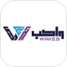
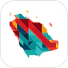
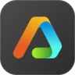
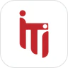

أنظمة الوكلاء المتعددة
تنسيق عبر LangGraph بتوجيه قائم على الأوامر ومخططات فرعية قابلة للتركيب: من روبوت محادثة ثنائي اللغة بستة وكلاء، إلى مساعد من 14 وكيلًا لمنصة وسائط رقمية.
LangGraph · LangChain · MCP · OpenAI API · Qwen · async Python
محمد حاتمقائد فريق الذكاء الاصطناعي في Globant
قائد فريق الذكاء الاصطناعي في Globant، بخبرة 7 سنوات في البيانات والذكاء الاصطناعي. بنيت مساعدًا من 14 وكيلًا لمنصة وسائط رقمية، وروبوت محادثة ثنائي اللغة من 6 وكلاء على نماذج ذاتية الاستضافة، وأتولّى تشغيل ما أبنيه في بيئة الإنتاج.
عملت في
أتولّى المسار كاملًا: كيف تتوزّع المهام بين الوكلاء، وماذا تسترجع، وأين يعمل النموذج، وكيف نتأكد أن الإجابات صحيحة.
تنسيق عبر LangGraph بتوجيه قائم على الأوامر ومخططات فرعية قابلة للتركيب: من روبوت محادثة ثنائي اللغة بستة وكلاء، إلى مساعد من 14 وكيلًا لمنصة وسائط رقمية.
LangGraph · LangChain · MCP · OpenAI API · Qwen · async Python
استرجاع هجين يجمع المتجهات وBM25 مع إعادة ترتيب بنموذج لغوي، وبحث دلالي وبصري عبر ملايين الأصول الرقمية.
Pinecone · Qdrant · pgvector · OpenAI embeddings
Qwen على وحدات A100 عبر vLLM: إصدارات النماذج، وتوزيع موارد GPU، وفحوص السلامة، وإعادة التشغيل التلقائية. خدمات FastAPI وgRPC في حاويات، مع CI/CD.
vLLM · Docker · Kubernetes (EKS) · Nginx · gRPC
تقييم النماذج اللغوية وتتبّعها ومراقبتها، لنعرف أن النموذج محقّ قبل أن يكتشف المستخدم العكس.
Langfuse · staged evaluators · reliability harnesses
معظم ما أطلقته ثنائي اللغة: العربية والإنجليزية في المنتج نفسه، من الاسترجاع والتعليمات حتى الواجهة.
معالجة العربية · واجهات من اليمين لليسار · تقييم بلغتين
مواقع سريعة ومتاحة للجميع ومتعددة اللغات بـAstro وTypeScript وTailwind CSS، مع دعم كامل للعربية. انظر النموذج أدناه.
Astro · TypeScript · Tailwind CSS · Cloudflare Workers
البنية والقرارات والنتائج، لمنصة وسائط رقمية، وشركة حلول ذكاء اصطناعي، وشركة تقنية عقارية.
بنيت مساعد ArabsStock على LangGraph: وكلاء متخصصون للبحث الدلالي، وتوليد الصور بالذكاء الاصطناعي، وعمليات قواعد البيانات، والإشراف على المحتوى، فوق منصة بحث تغطي ملايين الصور ومقاطع الفيديو والرسوم المتجهة.
ستة وكلاء متخصصين بتوجيه قائم على الأوامر في LangGraph، واسترجاع هجين مع إعادة ترتيب بنموذج لغوي، وبحث على الويب عبر MCP.
إعداد vLLM، وتوزيع موارد GPU، وإصدارات النماذج، ومراقبة السلامة، وإعادة التشغيل التلقائية على خوادم الإنتاج.
تصنيف الرسائل نصوصًا وصورًا وتوجيهها إلى القسم المناسب، مع نماذج لمراحل العملاء، وبحث تقريبي يجد الأسماء رغم الأخطاء الإملائية.
كل دور فترةٌ على خط زمني واحد، كما أقرأ مسارات التتبّع في الإنتاج. افتح أي فترة لترى ما أنجزته فيها.

مهندس أول للذكاء الاصطناعي وMLOpsWakeb Data · سبتمبر 2024 – أبريل 2026
مهندس برمجياتTabaqat · فبراير 2023 – مايو 2024، دوام جزئي
عالم بياناتAestheticsPro، الولايات المتحدة · فبراير – أبريل 2022، عمل مستقل
دبلوم الذكاء الاصطناعي، 9 أشهرITI بالشراكة مع EPITA باريس · أبريل 2021 – فبراير 2022التقييم والموثوقية والاسترجاع؛ كل أداة قابلة لإعادة التشغيل، وتُقرأ في جلسة واحدة.
مسار LangGraph قابل لإعادة التشغيل يقيّم مخرجات النماذج اللغوية على مراحل منفصلة للجودة والأمان وإعادة المحاولة، ويُحسب الحكم النهائي في الكود لا في النموذج.
يقيس مدى ثبات إجابات النموذج حين يُعاد صياغة السؤال نفسه، أو تدخله أخطاء إملائية، أو يُعاد ترتيبه، أو تُحشى فيه معلومات مشتِّتة.
خدمة استرجاع صغيرة بـFastAPI مع فهارس جيب التمام والضرب النقطي، وحماية من حقن الأوامر، ومقاييس لزمن الاستجابة ونسبة الإصابة.
نماذج BiGRU وCNN وأخرى تقليدية على نحو 455 ألف نص عربي بتضمينات AraVec.
تطبيق Dash يقارن ملخصات DistilBART وT5 وTextRank. مشروع جماعي ضمن دبلوم الذكاء الاصطناعي.
موقع Astro متعدد اللغات على Cloudflare Workers المعروض أدناه، مع حزمة اختباراته الكاملة.
بقية مستودعاتي العامة تمارين من دبلوم الذكاء الاصطناعي (2021–2022)، أحتفظ بها سجلًّا لبداياتي.
كل المستودعاتقرأ مساعدي سيرتي الذاتية وملفيّ على LinkedIn وGitHub. اسأله عن خبرتي، أو الصق وصفًا وظيفيًا لتعرف مدى ملاءمتي له. يجيب بالعربية أو الإنجليزية.
كيف يعمل: ملف معرفة واحد، وCloudflare Worker، وGoogle Gemini. لا حاجة إلى قاعدة بيانات متجهية؛ فالملف الشخصي كله يتسع في سياق النموذج.
عمل مستقل: logic-controls.com، موقع شركة أتمتة صناعية في مصر بأربع لغات: الإنجليزية، والعربية من اليمين لليسار، والصينية، والتركية، مع عرض تفاعلي لواجهة تشغيل صناعية (HMI).
Astro · TypeScript · Tailwind CSS · Cloudflare Workers · Turnstile
كل نقطة تشير إلى مكان استخدمتُ فيه المهارة فعليًا: في وظيفة، أو عمل مستقل، أو مستودع عام.
| المهارة | Globant | Wakeb | ArabsStock | Tabaqat | Empoweromics | مستقل وسابق | مفتوح المصدر |
|---|---|---|---|---|---|---|---|
| الوكلاء والنماذج اللغوية | |||||||
| تنسيق الوكلاء المتعددين | نعم | نعم | نعم | ||||
| LangGraph | نعم | نعم | نعم | ||||
| تكامل الأدوات عبر MCP | نعم | ||||||
| OpenAI API | نعم | نعم | |||||
| الاسترجاع | |||||||
| خطوط RAG | نعم | نعم | نعم | ||||
| بحث هجين وإعادة ترتيب بنموذج لغوي | نعم | ||||||
| البحث الدلالي والبصري | نعم | نعم | |||||
| التشغيل وMLOps | |||||||
| تشغيل النماذج (vLLM ووحدات GPU) | نعم | نعم | نعم | ||||
| خدمات FastAPI المصغّرة | نعم | نعم | نعم | ||||
| Docker وCI/CD | نعم | نعم | نعم | ||||
| تنسيق سير العمل (Prefect) | نعم | ||||||
| الجودة | |||||||
| تقييم النماذج اللغوية ومراقبتها | نعم | نعم | نعم | ||||
| إتاحة الواجهات واختبارها | نعم | نعم | |||||
| البيانات وتعلّم الآلة | |||||||
| معالجة اللغة (العربية والإنجليزية) | نعم | نعم | نعم | ||||
| الرؤية الحاسوبية وتعلّم الآلة الصوتي | نعم | نعم | |||||
| ETL وSQL | نعم | نعم | نعم | ||||
| الحوسبة السحابية (AWS وAzure) | نعم | نعم | نعم | ||||
مستقل وسابق: Logic Controls (واجهات)، وAestheticsPro، وMisria Digital Payments.وأيضًا: Python وPyTorch وTensorFlow وscikit-learn وPostgreSQL وKubernetes (EKS) وLinux.
تبحث عن مهندس لدور في الذكاء الاصطناعي أو LLM أو MLOps، أو تخطط لمشروع؟ أسرع طريقة للوصول إليّ هي WhatsApp أو البريد الإلكتروني. أو أولًا.